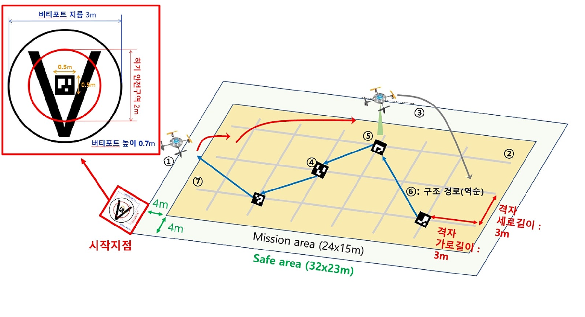
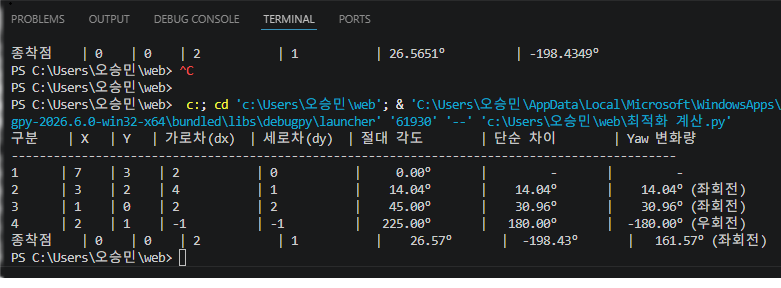

오승민 팀원 전담 개발 항법 알고리즘
6×3 공간 격자 환경에서의 ArUco 마커 정밀 추적 및 자율 경로 복귀 알고리즘을 구축하여 실내 붕괴 현장 탐색 신뢰성을 극대화함.
규격 속도: 2m/s 상시 제어
1) 가변 윈도우 기반 랜드마크 탐색 및 Yaw 조향 제어
총 18개의 공간 격자 위에 무작위(Random)로 주어지는 1, 2, 3, 4번 ArUco 마커를 순차적으로 인식함. 마커 간의 상대적 좌표 변위(예: [1,1]에서 [2,2]로의 이동)가 발생할 경우, 최적 진행 각도(45도)를 연산하여 드론의 Yaw 축을 동적으로 조향하고 Pitch를 미세 제어하여 속도를 2m/s로 정밀 유지하며 안정적이고 신속하게 가속 전진함.
2) 시퀀셜 상태 머신 기반 역순(4-3-2-1) 복귀 로직
탐색 완료 후 출발지로 귀환할 때는 고정형 복귀 방식을 탈피하고, 실시간으로 각인한 마커 세트를 역순인 4 → 3 → 2 → 1 순서로 정밀 트래킹함. 미지의 실내 환경에서도 들어왔던 유도 경로 그대로 안전하게 역추적하여 원점으로 되돌아오는 시퀀셜 복귀 유도 메커니즘을 완성함.

